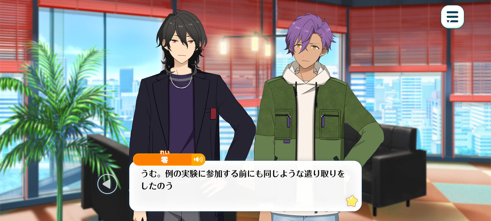
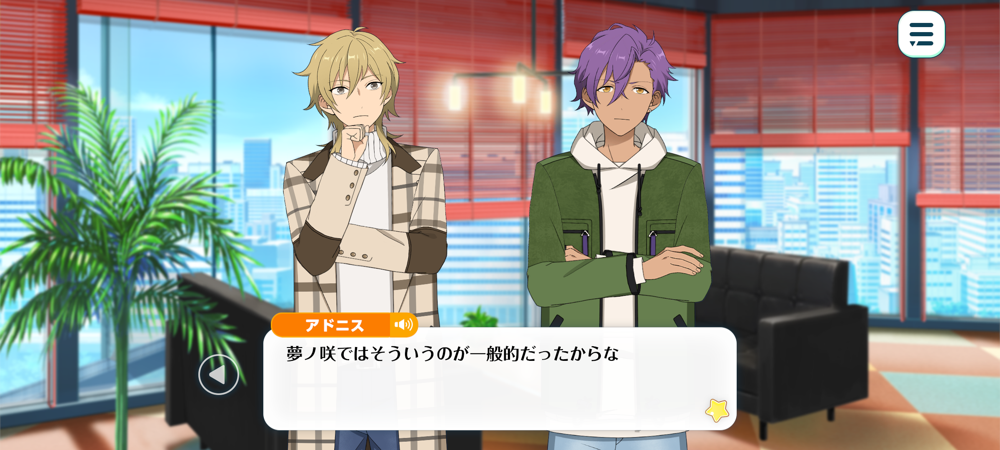

PYSCHOBREAK — Chapter 1


Time: Ten days after the AIIE Experiment
Location: ES building, RhythmLink office

Rei: This is a rather serious state of affairs.
Adonis: Hearing you say that gives me a sense of déjà vu.
Rei: Indeed. We had a similar exchange prior to our participation in the AIIE experiment.
Though, I daresay, the circumstances are considerably worse this time.
Kaoru: Ugh, my head's killing me. In more ways than one.
Koga: Ughhh... We had t'take sleepin' pills throughout the whole thing, 'n we'd keep wakin' up, only t'fall asleep again. My head's a right mess.
It's like... none of this feels real—
Kaoru: Ahaha! Want me to give your cheeks a little pinch?
Koga: Piss off, don’t touch me! I’ve already got a headache!
Adonis: I feel the same way, Oogami. During that week-long experiment, I was asleep for half of every day...
Perhaps that is why I feel so strange now. It's as though the line between reality and dreams has become blurred.
Rei: If only this were all a dream.
Now, let us take stock of the situation. It would appear that something quite inexplicable occurred during the week we were sequestered away from the outside world for the AIIE experiment.
We spent our days within the facility, passing the time with card games and various other amusements, all the while unable to take part in our usual idol activities...
And yet, for reasons quite beyond my comprehension, the public at large came to regard UNDEAD as pioneers of an entirely new direction, celebrating our tremendous success and newfound popularity.
Kaoru: I really do wonder what's going on here. I remember saying this beforehand, but I can't shake the feeling that we’ve been tricked in some way.
Koga: Ain't it obvious? They've got those clones of us runnin' around, haven't they? That's what I reckon, anyway.
So those fakes have been impersonatin' us and doin' whatever the hell they please while we've been away, right?
Rei: I believe that is more or less the correct interpretation. Even with your head in such a muddle, your instincts are as sharp as ever, Koga ♪
Koga: Ya think so? Hehe, that's what ya call animal instinct! I'm a noble wolf, after all! ♪
Kaoru: It’s cute when you don’t realise you’re being made fun of, Koga-kun.
Adonis: I understand what you mean.
...However, who exactly are these impostors?
Rei: That, I am afraid, remains a mystery. They call themselves HELLSING, and have been engaging in the very sort of radical, decadent activities that we ourselves once aspired to pursue.
To be more precise, they make no appearances on light-hearted variety programmes whatsoever. Indeed, they have all but shunned television, devoting themselves exclusively to performances on stage.
Kaoru: It’s kinda nostalgic, right?

Adonis: That sort of thing was commonplace back at Yumenosaki.
Rei: Indeed. They have recreated UNDEAD's songs with remarkable fidelity, whilst adding their own flair by placing even greater emphasis on the rock elements. More radical, more transgressive...
In a sense, they embody the very image of UNDEAD that the public once held dear.
HELLSING is, in essence, an orthodox evolution of UNDEAD. A version of ourselves that, in reality, could never have come to pass.
Koga: Tch. For a bunch of fakes, they're more genuine than the real deal. We should've stuck with that direction from the start instead of changin’ our whole approach.
Adonis: There's no point dwelling on that now. It's too late to change anything. And I say this in their defence, but I've told you time and time again - when ES was first established, this was undoubtedly the right decision.
Rei: How dreadfully tedious, going over the same old discussion again. What we ought to be concerning ourselves with now is how to deal with these impostors who've suddenly appeared before us - HELLSING.
Koga: Huh? Why don't we just sue 'em and be done with it? They’re usin’ our songs without permission, aren't they?
Adonis: I see. If we were to approach this as a case of copyright infringement, I believe we'd have a rather good chance of winning.
Kaoru: Didn't we have a similar discussion before? Something about generative AI, or whatever it was...
...Wait. I've just thought of something. It's probably a ridiculous idea, but—
Rei: I rather suspect I've arrived at the same conclusion. Pray, do enlighten us, Kaoru-kun.
Kaoru: So, you know how we participated in that strange experiment recently?
The AIIE experiment was supposed to make their freaky science fiction dream of creating artificial idols a reality, wasn't it?
And they took data from our brains...
Adonis: Wait. I think I see what you are getting at.
But... is something like that even possible?
Kaoru: Well, they wouldn't have gone ahead with the experiment if it were completely impossible, would they? ES must've invested all that money because there was at least some chance of making it happen, don't you think?
Koga: Oi, hold on a sec. What're tryna say...?
Don't tell me...—
Rei: I'm afraid that is precisely what we're dealing with.
Of course, at present, this is nothing more than conjecture.
Nevertheless, it seems highly probable that the impostors calling themselves HELLSING are artificial idols brought into existence through the AIIE experiment.